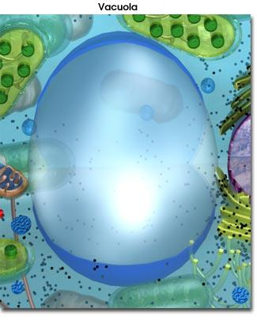
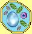

|
 |
Las vacuolas son sacos limitados por membrana, llenos de agua con varios azúcares, sales, proteínas, y otros nutrientes disueltos en ella. Cada célula vegetal contiene una sola vacuola de gran tamaño que usualmente ocupa la mayor parte del espacio interior de la célula.  |